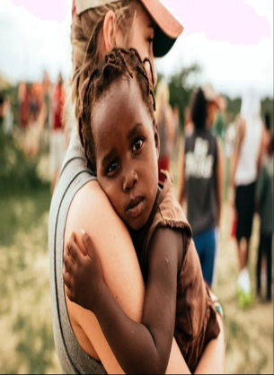
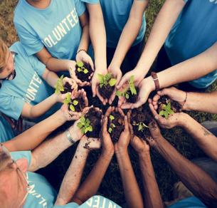

Puedes obtener ayuda uniéndote a nuestras campañas de voluntariado, haciendo una donación, o colaborando con los proyectos que más te inspiren. La ayuda de cada persona es clave para el cambio.
En Voluntrack, ofrecemos una plataforma para la gestión de voluntariado, recaudación de fondos y colaboración con ONGs, facilitando la conexión entre causas y personas dispuestas a hacer la diferencia.
Puedes contribuir de diversas formas: como voluntario, donando dinero a las causas que más te importan, o como dueño de ong utilizando nuestra aplicación web para una mayor organización y administración.